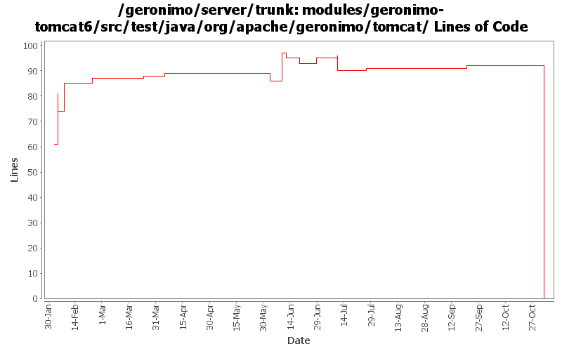

[root]/modules/geronimo-tomcat6/src/test/java/org/apache/geronimo/tomcat
 app
(0 files, 0 lines)
app
(0 files, 0 lines)

| Author | Changes | Lines of Code | Lines per Change |
|---|---|---|---|
| Totals | 43 (100.0%) | 187 (100.0%) | 4.3 |
| akulshreshtha | 5 (11.6%) | 51 (27.3%) | 10.2 |
| djencks | 11 (25.6%) | 45 (24.1%) | 4.0 |
| pmcmahan | 6 (14.0%) | 42 (22.5%) | 7.0 |
| kevan | 9 (20.9%) | 40 (21.4%) | 4.4 |
| jgenender | 3 (7.0%) | 7 (3.7%) | 2.3 |
| vamsic007 | 2 (4.7%) | 2 (1.1%) | 1.0 |
| prasad | 7 (16.3%) | 0 (0.0%) | 0.0 |
GERONIMO-3565. Modules distributed amongst framework/modules and plugins
0 lines of code changed in 7 files:
GERONIMO-2964 Cannot specify the Tomcat work directory for a web application
o Committing GERONIMO-2964-trunk.patch submitted in the JIRA
o geronimo-web.xml can now have a "work-dir" tag to specify the work directory to be used by the application.
o For Tomcat this work directory will be relative to "catalina.home"
o For Jetty this work directory will be relative to jetty home which is var/jetty by default.
1 lines of code changed in 1 file:
Get Tomcat connectors to runb in container
3 lines of code changed in 2 files:
GERONIMO-3303 Major simplification of authentication framework. Removes remote login and supporting code
10 lines of code changed in 1 file:
GERONIMO-3273 Tomcat MBeans not getting registered with MBeanServer created by Geronimo
o Adds MBeanServerReference to EngineGBean and sets geronimo MBeanServer for registering Tomcat MBeans
1 lines of code changed in 1 file:
GERONIMO-3184 - Add ability for Tomcat integration to implement Catalina Lifecycle Listeners
4 lines of code changed in 1 file:
GERONIMO-3083 fix j2ca container managed security
1 lines of code changed in 1 file:
GERONIMO-3154 Clean up tomcat security checks, removing unused and unnecessary non-jacc permission info
0 lines of code changed in 1 file:
GERONIMO-2687. Don't construct default and run-as subjects, get them from a login module. Also creates a separate server-security-config for the security config stuff you probably want to change. Also fixes lots of security problems, including mdb run-as handling.
32 lines of code changed in 5 files:
GERONIMO-3206 Updates to match the patched version of Tomcat. There's also some plugin updates in pom.xml for GERONIMO-3205
40 lines of code changed in 9 files:
GERONIMO-3010 Update to patch version 3
1 lines of code changed in 1 file:
GERONIMO-2965 GERONIMO-3008 GERONIMO-3010 Tomcat annotation processing with lots of other improvements. Uses LifecycleProvider interface proposed in GERONIMO-3010
1 lines of code changed in 2 files:
GERONIMO-2805 tribes clustering support for tomcat
copied the tomcat clustering support from server/branches/1.2 and refactored it to work with catalina-ha
and tribes from tomcat6. Added InterceptorGBean, ChannelGBean, and morphed MessageListenerGBean into
ClusterListenerGBean to correspond with the new arch in tomcat 6. I will attach a geronimo config.xml to
the JIRA that can be used to startup a clustered server. Reenabled the clustering support in EngineGBean
and the various o.a.g.tomcat classes.
4 lines of code changed in 2 files:
GERONIMO-2804 implement JSF support
- update the myfaces snapshot jars to avoid ELContext problem in its resolvers
- remove references to commons-taglibs where not needed or replace with references to jstl/jstl
- enable myfaces context listener in tomcat by providing new gbean property. tomcat's
default method for finding listeners in TLDs doesn't work with Geronimo's multiparent classloader.
- add org.apache.myfaces and org.apache.taglib to non-overrideable classes for webapps
- enable TLD processing in jetty context so that it can find the myfaces listener
- squelch spurious WARN messages from myfaces configuration startup
1 lines of code changed in 1 file:
GERONIMO-2517 Added resetStats to StatisticsProvider
GERONIMO-1293 Added implementation of resetStats() for tomcat
24 lines of code changed in 1 file:
it seems that upgrading to tomcat 6.0.8 did not fix the intermittent unit test case failure.
disabling that unit test again to attempt further investigation of the failure.
37 lines of code changed in 1 file:
GERONIMO-1293 fixed license, removed unused imports
7 lines of code changed in 1 file:
GERONIMO-1293 Added initial statistics collection support to tomcat
20 lines of code changed in 3 files:
reenabling a unit test case that was failing intermittently on tomcat 6.0.3.
I cannot recreate the failure on geronimo's current tomcat 6.0.8 driver using
mac or windows.
0 lines of code changed in 2 files: